Туториал по DelphiX
DelphiX - библиотека для Delphi основанная на Microsoft’овском DirectX. В настоящий момент, DelphiX поддерживает функции DirectX 1-7. Благодаря концепции DirectX, игры сделанные на более ранних версиях DirectX будут работать и на более поздних.
1. 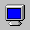DXDrawПоверхность компоненты DXDRAW служит фундаментом для отображения графики.
1.1 Наиболее частая конфигурацияAlign...................allClient
AutoSize................True
Display
FixedBitCount........True
Fixedratio...........True
Fixedsize............False
Options
DoFullScreen.........True
doFlip...............True
Rest.................False
Если одновременно значения DoFullScreen и DoFlip сделать равными True, то кнопки управления окном не появятся (GDI=off). Если Вы хотите использовать кнопки, меню и т.д. можно сделать их в виде спрайтов. Если DoFlip=False, то включен оконный режим. Использование DoFullscreen и DoFlip делает игру очень быстрой по сравнению с игрой в оконном режиме.DXDrawSurface имеет тип TDirectDrawSurface. Эта поверхность также называется ' вторичной поверхностью ' или закадровой поверхностью, потому что она невидимая. Поверхность становится видимой после запроса метода DXDraw.Flip , в тот момент вторичная поверхность становится первичной. DXDraw.Primary - первичная (видимая) поверхность.
 1.2 Режимы экрана
1.2 Режимы экрана
Текущая конфигурация видеорежима Windows не влияет на игровую конфигурацию. Все настройки осуществляются через DXDraw. Форма, на которой размещается DXDraw , должна иметь тип TDXForm.
1.2.1 Оконный режим
Для включения/выключения оконного/полноэкранного режимов служит опция [doFullScreen], посмотрите:
procedure TForm1.WindowMode; begin DXDraw1.Finalize; RestoreWindow; DXDraw1.Options := DXDraw1.Options - [doFullScreen]; DXDraw1.Display.Width := 640; DXDraw1.Display.Height := 480; DXDraw1.Display.BitCount := 8; DXDraw1.Initialize; end; DXDraw.Align := alClient; Form.ClientWidth := … // Установка ширины Формы/DXDraw Form.ClientHeight := … // Установка высоты Формы1.2.2 Полноэкранный режим
procedure TForm1.FullScreenMode; begin DXDraw1.Finalize; StoreWindow; DXDraw1.Options := DXDraw1.Options + [doFullScreen]; DXDraw1.Display.Width := 640; DXDraw1.Display.Height := 480; DXDraw1.Display.BitCount := 8; DXDraw1.Initialize; End; // Set mode in non-Windows GUI Disable windows-controls-< purely graphics screen (very fast) DXDraw.Options := DXDraw.Options + [doFlip]; // Enable Windows controls DXDraw.Options := DXDraw.Options - [doFlip]; Screen.Cursor := CrNone; // Спрятать курсор Form1.BorderStyle := bsSingle; // Спрятать бордюр формы2. 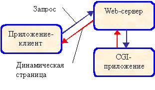DXImageList
Компонента для загрузки графических файлов.
2.1 Загрузка изображений во время выполнения
Нижеприведенная процедура загружает растровое изображение в DXImageList (BMP, DIB и т.д.). Картинка становится элементом DXImageList.
procedure LoadImage (Filename, NameImage : String; PatWidth, PatHeight : Integer; Transp : Boolean; TranspColor : TColor); begin DXImageList.Items.Add; with DXImageList.Items[DXImageList.Items.Count-1] do begin Picture.LoadFromFile (FileName); Name := NameImage; PatternWidth := PatWidth; PatternHeight := PatHeight; SkipHeight := 0; SkipWidth := 0; SystemMemory := False; Transparent := Transp; TransparentColor := TranspColor; Restore; end; end;
С помощью этого метода можно запросто загрузить около 200 BMP или DIB картинок одновременно. Большее количество требует большего объема памяти.
2.2 ПалитраПалитра это таблица цветов. Это - фактически массив чисел, где каждое число относится к некоторому цвету. Каждый цвет - фактически также только число. Это число зависит от количества красного, зеленого и синего в цвете (RGB-значение). В DelphiX, цветовая палитра доступна через DXDraw.ColorTable. Чтобы быть уверенным, что DXDraw будет использовать ту же самую палитру что и изображение в DXImageList сделаем следующее:
ImageList.Items.MakeColorTable; DXDraw.ColorTable := ImageList.Items.ColorTable; DXDraw.DefColorTable := ImageList.Items.ColorTable; DXDraw.UpdatePalette;
Ниже дан кусок кода для создания цвета (TRGBQuad). Стандартная палитра содержит 256 этих RGBQuad'ов.
Var Pal : TRGBQuad; Pal.rgbRed := 16; Pal.rgbGreen := 0; Pal.rgbBlue := 0; Pal.rgbReserved := 0; DXDraw1.ColorTable[i] := Pal;
Конечно можно сделать функцию для этой цели, подобную данной ниже:
function ComposeColor(Dest,Src:TRGBQuad;Percent:Integer):TRGBQuad; begin with Result do begin rgbRed :=Src.rgbRed+((Dest.rgbRed-Src.rgbRed)*Percent div256); rgbGreen :=Src.rgbGreen+((Dest.rgbGreen-Src.rgbGreen)*Percent div256); rgbBlue :=Src.rgbBlue+((Dest.rgbBlue-Src.rgbBlue)*Percent div256); rgbReserved :=0; end; end;
Ниже видно как заполнить палитру цветами:
Var Col : Integer; for i:=0 to 255 do DXDraw1.ColorTable[i] := ComposeColor (RGBQuad(GetRValue(Col), GetGValue(Col), GetBValue(Col) ), DXDraw1.DefColorTable[i], p); DXDraw1.UpdatePalette;
Анимация палитры (изменение цвета) используется для придания мерцания, вспышек (и прочих эфектов).
2.3 ФонЕсли нам надо заполнить весь фон одной картинкой, то нужно сделать картинку размером с экран (например 640x480). Высота и ширина фоновой картинки определяются свойствами PatternWidth и PatternHeight (TpictureCollectionItem) а изображение содержится в DXImageList.Items […] .Picture. Когда фон представлен 1 картинкой, PatternHeight и PatternWidth устанавливаются в 0 (но не, например, в 640x480!).
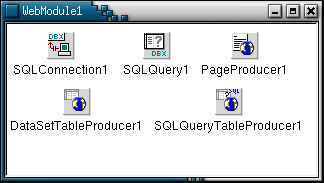Одно изображение как постоянный фон
3. 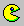DXSpriteEngineSpriteEngine компонента, контролирующая все спрайты SpriteEngine - не 'чистый' DelphiX компонент, потому он не представляет собой часть DirectX, как другие DelphiX компоненты. Многие игроделатели, использующие DelphiX, создают собственный Движок (например игра ‘Joffa’: www.joffa.com/).
Ниже - системы координат, с объяснением, как они связаны в SpriteEngine.
3.1 Система координат

Sprite.WorldX = Sprite.X + Sprite.Engine.X (sprite.x. связан с SpriteEngine) Sprite.WorldY = Sprite.Y + Sprite.Engine.Y (sprite.y. связан с SpriteEngine)
Верхний левый угол представляет координату (0,0). Sprite.Engine.X и Sprite.Engine.Y по умолчанию 0. В этом случае оба X и Y значения Спрайта равны значениям WorldY и WorldX. Когда меняются значения X и Y SpriteEngine'а, все X и Y значения, содержащиеся в SpriteEngine, тоже меняются.
Sprite.Moved = Допускать перемещение; да или нет Sprite.Collisioned = Обнаруживать столкновение; да или нет
Метод DXSpriteEngine.Move удостоверяет (?), что все спрайты в SpriteEngine вызывают свой метод DoMove. Обычно это происходит после каждого интервала таймера компонента Timer). В этом методе, проверка на столкновение сделана, через вызов метода спрайта Collisions. Метод DoCollision вызывается только когда столкновение обнаружено. Есть много решений для создания движения фона при перемещении спрайта. Одно из решений состоит в том, чтобы изменить X и Y значения DXSpriteEngine в DoMove методе перемещающегося спрайта.Вот так:
DXSpriteEngine.X := ... DXSpriteEngine.Y := ...
Часто используемое решение:
X := ... // Новое значение X спрайта Y := ... // Новое значение Y спрайта DXSpriteEngine.X := -X + (DXSpriteEngine.Width div 2) - (Width div 2); DXSpriteEngine.Y := -Y + (DXSpriteEngine.Height div 2) - (Height div 2);
Другим решением для создания движения фона, может быть движение BackgroundSprites.
3.2 Игровой сценарийНиже стандартный сценарий для игры (вкл. SpriteEngine). (дам позже, как есть, на хренегознаеткаком языке)
3.3 Фоновые изображения 3.3.1 Статический фонTBackground = class (TBackgroundsprite)
public
procedure DoMove (MoveCount : Integer); override;
end;
SBackground := TBackground.Create (DXSpriteEngine1.Engine);
with SBackground do
begin
image := DXImageList1.Items.Find('image1');
image.Transparent := false;
SetMapSize(1,1);
Z := -10;
Tile := false;
end;
var SBackground : TBackground;
3.3.2 Движущийся фон
TBackground = class (TBackgroundsprite) public procedure DoMove (MoveCount : Integer); override; end; procedure TBackground.DoMove (MoveCount : Integer); begin inherited DoMove (MoveCount); X := X-1; end;3.3.3 Тайловый фон (фон собран из тайлов)
Tile := True; { Фон полностью заполнен тайлами
(При прокрутке, тайлы будут повторяться).
Значение SetMapSize будет игнорироваться;
количество тайлов зависит от размера области
экрана (завершенный фон). SetmapSize должен быть вызван!
иначе работать не будет ..
попробуйте например: SetMapSize (1,1) }
Tile := False; { Количество тайлов по высоте и ширине is determined by
‘SetmapSize (w,h) SetMapsize (20, 10) <-> mapwidth :=20; mapheight :=10; }
Если фоновая картинка не закрывает весь экран, она будет размножена. Каждый кусочек называется «Тайл». В случае, если изображение должно представлять собой набор из Тайлов, параметры PatternWidth и PatternHeight должны быть меньшие чем область экрана. Эти значения не должны быть слишком большие (например 70x50). Если значение тайлов очень велико, то ничего видно не будет!
тайл1 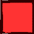тайл2 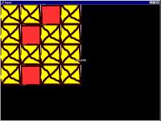Тайловый фон 4x4 (случайное заполнение)
MapWidth := 4; MapHeight := 4;
SBackground.Chips[0,0] to [3,3]
Randomize;
SBackground := TBackground.Create (DXSpriteEngine1.Engine);
with SBackground do
begin
image := DXImageList1.Items.Find('backgr');
image.Transparent := false;
SetMapSize(4,4);
Z := -10;
for i := 0 to MapHeight-1 do
for j := 0 to MapWidth-1 do
Chips[j,i] := random(2);
Tile := false;
end;
Chips[j,i] := -1; // тайл [j,i] будет без картинки
Есть предел для числа Тайлов, при использовании тайлового фона. Это число зависит от памяти компьютера, но возможно и большое количеств. Он делал испытание с Тайлом 100x100, повторного на карте 1000x1000. Хорошая вещь состоит в том, что каждый из этих Тайлов может использоваться при построении различных изображений. Это возможно, потому что каждый Тайл хранится как номер (integer). Отрицательный номер Тайла означает, что этот Тайл без картинки.
3.3.4 Столкновение с фономRandomize;
SBackground := TBackground.Create (DXSpriteEngine1.Engine);
with SBackground do
begin
image := DXImageList1.Items.Find('backgr');
image.Transparent := false;
SetMapSize(5,5);
Collisioned := True; //Не забудьте, иначе столкновения учитываться не будут!
Z := -10;
for i := 0 to MapHeight-1 do
for j := 0 to MapWidth-1 do
begin
Chips[j,i] := random(2); // Выбирается случайный Тайл
CollisionMap [j,i] := false; // Все Collisions отключены
end;
Tile := false;
end;
SBackground.CollisionMap [3,3] := true; // Тайл [3,3] "чувствует" столкновения
!Collisioned у TBackgroundSprite - по умолчанию False, а у TimageSprite - True.
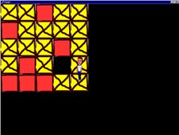Спрайт столкнулся с Тайлом фона Chip [3,3].
3.4 Изометрический тайловый движок
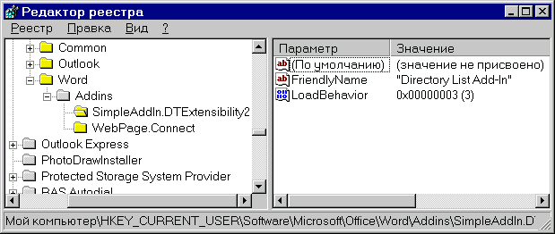
NatureBackgroundSprite Z:=-10 (3 Тайла в рисунке)
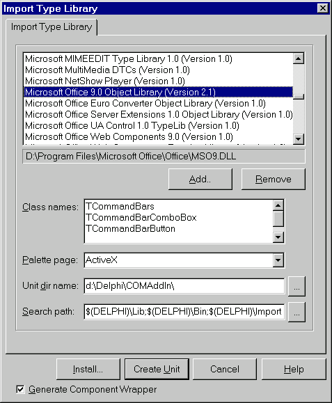GrassBackgroundSprite Z:=-11; (1 тайл в рисунке)
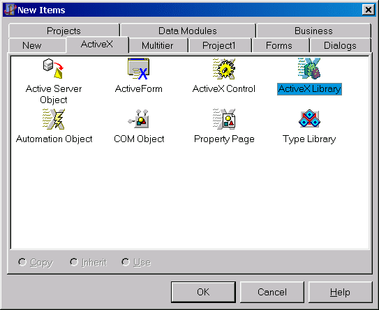Такая же концепция как и в предыдущем красно-желтом Тайловым фоном. Но теперь используются два уровня для тайлов вместо одного, и NatureBackgroundSprite имеет изометрическую проекцию. Таким образом можно делать многослойные BackgroundSprites, формируя сложные фоны. В интернете есть множество статей о создании законченных Изометрических движков.
3.5 Анимация спрайтовКадр - картинка из серии картинок, используемых для анимации. Ниже картинка из 7 кадров.
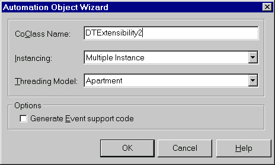 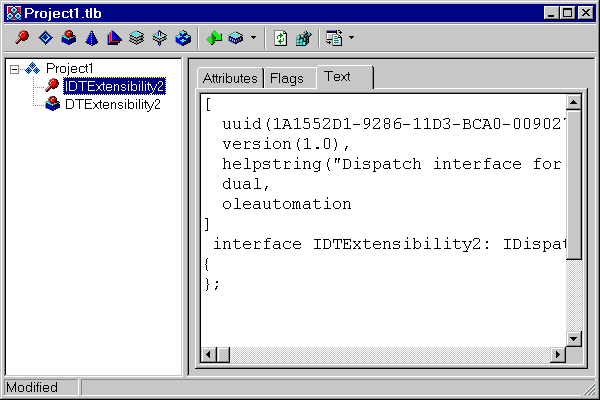FPS Количество кадров в секунду.
AnimPos текущий кадр анимации
AnimStart стартовый кадр
AnimCount количество кадров анимации (берется из PatternCount)
AnimLooped для повтора анимации (по кругу)
AnimSpeed = (DXTimer.Interval / 1000) * FPS (напр.: Interval=1 и FPS=2 а 2/1000)
Для анимации достаточно указать AnimStart. AnimPos автоматически изменяется во время анимации.
3.6 Столкновение спрайтов & PixelCheck 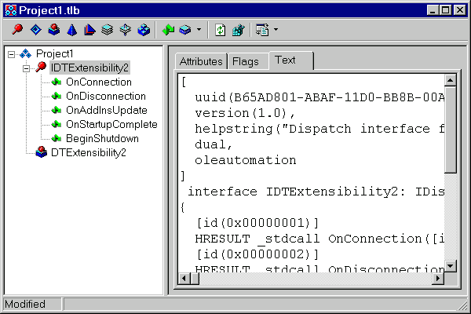PixelСheck ON: следит касаются ли пикселы(точки) спрайтов друг друга.
PixelСheck OFF: следит касаются ли рамки спрайтов друг друга (рамка определяется высотой и шириной спрайта. Это не всегда то же самое что высота и ширина изображения спрайта!)
1. PixelСheck не работает вообще когда сталкивающиеся спрайты анимируются.
2. PixelСheck работает плохо, когда один из двух сталкивающихся спрайтов анимируется.
3. Pixelcheck работает хорошо, только когда ни один из обоих спрайтов не анимируется.
4. Столкновения без PixelCheck всегда работают хорошо (даже когда оба спрайта анимируются). В этом случае, важны только рамки спрайтов (высота и ширина).
В процедуре DoMove спрата, метод Collision следит, за столкновениями с другим спрайтом. Если столкновение произошло, то вызывается метод DoCollision.
Заголовок процедуры Collision всегда выглядит так:
procedure TDummySprite.DoCollision (Sprite: TSprite; var Done: Boolean);
Где Sprite - спрайт, который столкнулся с текущим спрайтом. Вы можете явно указать, что столкновение произошло. Это может быть сделано, установкой параметра Done, равным True. По умолчанию этот параметр равен False. В методе DoMove надо всегда вызывать оригинальный метод DoMove : Inherited DoMove (MoveCount); (Не нужно делать подобным способом при использовании DoCollision)
4. 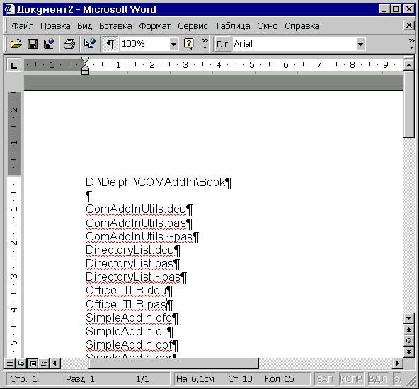DXTimerФактически, таймер управляет всей игрой; все действия игры происходят в одной большой петле. Тело этой петли может быть включено в 'OnTimer' событие Таймера. DXTimer опрашивается каждую миллисекунду. Хотя это не означает что каждую миллисекунду что-что случается. Определяется это в параметре 'Interval' - число миллисекунд между каждым действием. Предположим, что это значение - 100, тогда каждую 0.1 секунды событие 'OnTimer' будет выполнено (главная петля игры).
procedure TForm1.DXTimer1Timer(Sender: TObject; LagCount: Integer); begin if not DXDraw1.CanDraw then Exit; DXDraw1.Surface.Fill (0); DXSpriteEngine1.Move (1); DXSpriteEngine1.Draw; DXDraw1.Flip; end;
Interval Время в миллисекундах между выполнением двух последовательных OnTimer событий.
Framerate (=FPS) Число OnTimer событий исполняющихся каждую секунду (частота). Interval = 1000 / FrameRate
Внимание: Когда используется очень маленький интервал (меньше чем 10 миллисекунд.) отношение между Interval и FrameRate - не будет правильным, так как у компьютера есть максимальный FrameRate (например 82 FPS), тоже самое и с максимальным интервалом. Какой интервал может быть, полностью зависит от компьютера. Обычно, интервал между 0 и 1 выбирается так, чтобы получился максимальный FrameRate. FrameRate должен считываться непосредственно, потому что он не может быть рассчитан через Interval. Минимальный FrameRate для нормальной мультипликации - около 25, но чем больше, тем лучше. 60 - хороший FrameRate (DXTimer.Interval = 1000 / 60). Поскольку FrameRate – значение только для чтения, то интервал должен задаваться явно, чтобы приобрести некоторую частоту.
DXTimer1.Interval := 1000 div 60; // 60 раз в секунду вызываем метод OnTimer LagCount is the (?). frequence +1 // частота = кол-во исполнений 'OnTimer'
Также нельзя самостоятельно устанавливать параметр 'LagCount'. Это делается автоматически. Значение LagCount зависит от выбранного FrameRate (интервала). LagCount - истинный интервал времени, который используется (он может отличиться от выбранного интервала таймера). При выборе 0 или 1, LagCount определит минимальный интервал времени, так, чтобы получился максимальный FrameRate.
DXSpriteEngine.Move(LagCount);
X := X+ 0.7*MoveCount; { Вы можете делать значение MoveCount таким-же, как и LagCount.
Вы можете посылать это значение через параметры метода но не надо
(Вы можете дать ваше собственное значение MoveCount) }
5. DXInput
Компонента для отслеживания ввода с клавиатуры, джойстика или мыши.
//Получить текущее состояние
DXInput.Update;
//Текущее состояние джойстика
DXInput.Joystick.X;
DXInput.Joystick.Y;
//Определение движения джойстика:
if ((DXInput.Joystick.X><0) or (DXInput.Joystick.Y><0)) then
...
//Интервал осей
DXInput.Joystick.RangeX := ... // RangeX =10 то интервал: от-10 до +10
DXInput.Joystick.RangeY := ...
DXInput.Joystick.RangeZ := ...
//Определение состояния клавиатуры
if isLeft in DXInput.States then // Нажата кнопка влево.
.....
if isRight in DXInput.States then
....
if isUp in DXInput.States then
....
if isDown in DXInput.States then
....
//Возможно, что DXInput.States содержит и IsUp и IsRight (вверх, вправо).
DXInput1.States := DXInput.States - [isButton1]; //Отключение 1 кнопки
DXInput1.States := DXInput.States + [isButton2]; //Включение 2 кнопки
//Кнопки
procedure TForm1. FormKeyUp(Sender: TObject; var Key: Word; Shift: TShiftState);
begin
if Key = VK_ESCAPE then
Close;
if key = ord('B') then
...
end;
VK_ESCAPE
Ord (Ascii)
VK_F1 t/m VK_F10
VK_SPACE
VK_UP
VK_DOWN
VK_LEFT
VK_RIGHT
6. Советы и секреты
6.1 Получение версии DirectX
function GetDXVersion : String;
begin
with tregistry.Create do
try
rootkey:=HKEY_LOCAL_MACHINE;
if OpenKey( '\SOFTWARE\Microsoft\DirectX', False) then
result:= copy(Readstring('Version'),4,3)
else result:='DirectX не установлен';
finally
free;
end;
end;
Или можно запустить C:\Windows\System\DXDiag.EXE :)
6.2 Game Scenario 6.3 STD Sprite 6.4 Оптимальное качество звука
procedure Tform1.DXSound1Initialize(Sender: TObject);
var fmt:TWaveFormatEx;
begin
try // Set up the DXSound object to use high quality samples
with Fmt do
begin
wFormatTag := WAVE_FORMAT_PCM;
nSamplesPerSec := 44100;
nChannels := 2;
wBitsPerSample := 16;
nBlockAlign := wBitsPerSample div 8 * nChannels;
nAvgBytesPerSec := nSamplesPerSec * nBlockAlign;
end;
// must be in exclusive to set the format
DXSound1.Options := DXSound1.Options + [soExclusive];
DXSound1.Primary.SetFormat(Fmt);
except // Error
end;
end;
6.5 Text in DXDraw
with DXDraw1.Surface.Canvas do begin Brush.Style := bsClear; Font.Size := 12; Font.Color := clRed; TextOut(0,0, ’Some Text’); Release; end;6.6 Меню
For making menu-items you can make a different picture (sprite) for each menu-item. To show if the menu-item is on or off, you’s just show a different picture (when you move your mouse over the Option).
procedure TForm1.DXDrawMouseMove(Sender: TObject; Shift: TShiftState; X,Y: Integer);